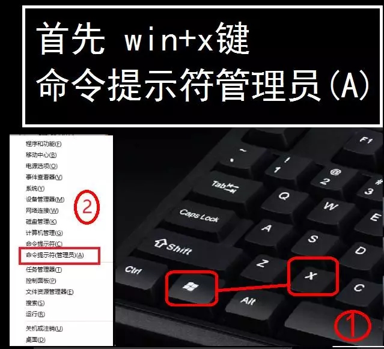

【判断密钥是否有效】： 联网激活 错误代码 结尾为020，008的可以进行电话激活，结尾为060，003
的为无效key，请更换激活key再试 office联网激活，提示超过次 数限制，可电话激活！
【注意】：安装密钥时若出现密钥无效的提示时请按快捷键Win+X+A （先按win再不放键的前提下按x
最后按a）或右击开始键找到命令提示符以管理员模式运行输入 slmgr.vbs -ipk xxxxx ...回车即可安装上
（注：将xxxxx ...替换为要输入的密钥）

Windows10 系列 MAK
Windows 10 Enterprise MAK
[Key]：VNY28-Q772R-JPXVV-GVMGP-W2QF4 [剩余次数：7270]
[Key]：FRVVX-9NR3F-J8CRW-74DCX-M98WR [剩余次数：0]
[Key]：NP7VF-D6TYF-RPM3T-JCG3W-QDBPF[剩余次数：0]
[Key]：NB83K-XPG3T-Y2GM6-33P8Y-FGDF4 [剩余次数：0]
[Key]：NC263-9DQ2T-PV9JB-666R6-GMT44[剩余次数：0]
[Key]：3QKTN-TK7CR-XBPD8-WXWW9-3RR8R [剩余次数：0]
[Key]：8NYQB-MF9JH-RDBTK-2DVMH-T3BPF[剩余次数：0]
[Key]：4QWNX-48FJH-H62XF-XT9R2-BTDF4 [剩余次数：0]
[Key]：PHYTD-WN663-JVB2W-2MXDT-V6DF4 [剩余次数：0]
[Key]：NGJH7-QHTDY-4QTD9-THFWK-9HJWR [剩余次数：0]
[Key]：9YDC4-NDV24-RXT39-JBR39-M98WR[剩余次数：0]
[Key]：PYPYB-9NX8M-9CG3J-J3VKP-TMT44 [剩余次数：0]
[Key]：H84PN-HXQPK-C4MMP-CRVBF-4X8WR[剩余次数：0]
[Key]：YGBYK-8NQX2-QCQ3P-TBDWT-9KXR4 [剩余次数：0]
[Key]：N67JX-6XXPP-C7VGC-WKHJ6-RRG44[剩余次数：0]
Windows 10 EnterpriseN MAK
Windows 10 EnterpriseS 2019 MAK
[Key]：RXN7B-G2T3Q-W8HFT-24JGT-D3YJP [剩余次数：5842]
[Key]：4YN6D-Q38VD-4KFBM-M4DP7-QPG2C [剩余次数：0]
[Key]：273HQ-N333M-XCKCW-PR3FX-CDPF2 [剩余次数：0]
[Key]：VKNTK-Y7CXY-TR72T-4GDV2-DDDCC [剩余次数：0]
[Key]：K8JNB-279VP-WFVW3-Y488F-7H8R2[剩余次数：0]
[Key]：NQCFG-7W6CF-7B9FV-GH629-4JT2C [剩余次数：0]
[Key]：GHGDY-2NDD7-KB9PW-QKK7B-XBWR2[剩余次数：0]
Windows 10 EnterpriseS 2016 MAK
[Key]：NQHWT-CXQXK-BG9DF-P3MHJ-82RCF [剩余次数：28]
[Key]：V74XF-NP98C-9PF79-2RWXP-76FCD [剩余次数：0]
[Key]：3BHXF-8VNMB-FC8BP-X94QW-4VWWQ[剩余次数：0]
[Key]：K3JMB-NHBHJ-J9GDM-B887C-YKPJQ [剩余次数：0]
[Key]：N4Q46-BRCJK-RHVFW-VHPHQ-7VBPD[剩余次数：0]
[Key]：NKVWJ-RPT7X-T46TY-WKC96-6F48Q [剩余次数：0]
Windows 10 EnterpriseSN 2016 MAK
[Key]：RQNR8-3P36J-74BH7-DR2GJ-6MV2F [剩余次数：957]
[Key]：RVJVP-8TNBX-H2T93-TFVM3-9D8WR [剩余次数：475]
Windows 10 EnterpriseS 2015 MAK
Windows 10 EnterpriseSN 2015 MAK
[Key]：QYXMQ-MCN7Q-3GVJ4-YJC23-YBH2X [剩余次数：16]
Windows 10 Professional MAK
[Key]：8G7XN-V7YWC-W8RPC-V73KB-YWRDB [剩余次数：7509]
[Key]：XC6VJ-94NQX-9PBJC-H6772-MP2KM [剩余次数：582]
[Key]：C38W9-KWNBH-M4HWH-746BK-H6DGY[剩余次数：1841]
[Key]：NY2G4-WJT7M-7XFMW-B9R79-BKMQB [剩余次数：655]
[Key]：PH8P3-GNM7G-833PJ-K7V8F-3DBQB[剩余次数：0]
[Key]：WDVNV-W4Q3Y-V2864-8D7DG-P7JXM [剩余次数：0]
[Key]：FKNC6-W4TPX-CV42T-B7JR9-RM49M[剩余次数：0]
[Key]：WR6JN-7TDPG-WB74Y-YKF43-C373B [剩余次数：0]
[Key]：26PF3-29NGX-79XWM-VPKYX-T83GY [剩余次数：0]
[Key]：HNVPY-2P3D4-X2GKP-226V3-T6PKM [剩余次数：0]
[Key]：FG6TM-4N6GW-M4FCR-7FXBX-8QKTY [剩余次数：0]
[Key]：K94NX-TFPF8-RJ6MC-6QW2H-7QWXM [剩余次数：0]
[Key]：7PN2K-TT6X8-CGP2K-VRRJB-G3BQB[剩余次数：0]
[Key]：N979W-XDQ3Y-CRWRH-X37JV-M4G6Y [剩余次数：0]
[Key]：WNPFY-KT7DM-87YHQ-GCBBQ-8K8XM[剩余次数：6]
[Key]：XPMX3-NYRQJ-VKGQT-KYPWV-M4G6Y [剩余次数：0]
Windows 10 ProfessionalN MAK
[Key]：HRY3G-NXWKM-FH7YY-BDWPR-KBT7B[剩余次数：72]
[Key]：938NY-2MPPG-KCB7G-HD7G2-76DHB[剩余次数：0]
Windows 10 Education MAK
[Key]：83RN8-D8VGR-37PCK-MCCKM-WHVY3[剩余次数：0]
[Key]：PNFQX-G8RH3-B3VMM-2VPF4-369RQ[剩余次数：0]
[Key]：RN7DD-C3WDD-BPBTH-Q34MP-HH64Q[剩余次数：1942]
Windows 10 EducationN MAK
[Key]：QN79V-RDKJ8-R378G-JTF3F-7H64X[剩余次数：284]
[Key]：RVN3V-VK8W8-CTCP6-CX763-GF4B9[剩余次数：27]
[Key]：FB7TK-QNYHQ-BGMWB-PJY4T-8TYM9[剩余次数：0]
Windows 10 ProfessionalEducation MAK
[Key]：BVP8F-MN7Q6-KBYMP-79RD3-TCRBQ[剩余次数：0]
[Key]：PDFN3-DC8FD-4TT39-QCCG2-JB64D[剩余次数：0]
[Key]：MN3FC-9RBCX-X9V7M-2M9JJ-XW4BQ[剩余次数：0]
[Key]：7JH6P-4NCPW-HJP46-GYRWG-4M64D[剩余次数：0]
[Key]：P8BKQ-2N82V-XQ4M9-6TRWW-YP3FD[剩余次数：0]
Windows 10 ProfessionalWorkstation MAK
[Key]：NCHRH-2T63T-G7RXK-CDTH8-RX9YX[剩余次数：5073]
[Key]：VK6NF-PFH2Y-RHJQP-VRYYW-DGQMX[剩余次数：923]
[Key]：Y2M3X-JPN7M-XDQ2R-DK989-3RVBX[剩余次数：1076]
[Key]：GHNFT-JMDXC-37K9G-DT9TD-TCRH9[剩余次数：612]
[Key]：XCJDN-D6Y2W-7J79X-7P27B-DPGFK[剩余次数：82]
Windows 10 ProfessionalWorkstationN MAK
[Key]：QNX6C-DKJMX-XDYCM-PX36T-H8TFT [剩余次数：126]
[Key]：4FPCQ-NB9XF-6QR66-VF8HD-C384T[剩余次数：63]
[Key]：MF3K4-H6NGG-9QHHB-YD9R6-GMV8G[剩余次数：37]
[Key]：XTBNP-479T8-RF47D-JQHBF-KBV8G[剩余次数：44]
[Key]：43BFJ-RN96F-PFPJG-K2C26-XQCRT[剩余次数：39]
Windows10 系列零售版系列激活密钥
Windows 10 Professional Retail 版激活密钥
Windows 10 ProfessionalN Retail 版激活密钥
[Key]：NDB8R-XVHJY-G3WMQ-P4MCD-97666
[Key]：WRKMN-PJCV6-X9R4H-WFWKH-46YQG
[Key]：3WTKN-RV9XV-XDRHF-HD2QX-66PKT
[Key]：9DYYN-F3J8H-PKB2F-267H2-HH666
[Key]：3QNMR-QVV7C-YB7JQ-F3KDD-QRR9T
[Key]：VHYRV-N7T84-2C8BX-G9CCQ-DV666
[Key]：M6NQX-G7GPY-Y8TWB-J7TR2-FX8XT
[Key]：NYHDD-MK9Q3-W49RT-WYQ6P-27JXT
Windows 10 Home (Core) Retail 版激活密钥
Office 2019 系列 MAK
Office 2019_ProPlusVL_MAK
[Key]：RD934-FNHHF-CDTBK-GWHF6-GMWKQ[剩余次数：0]
[Key]：D7VCR-89NFP-4J3TQ-PKF43-WQM9Q[剩余次数：0]
[Key]：HHM22-JNH39-FPYXG-RY2RH-YY7QD [剩余次数：0]
[Key]：H79NB-4996X-MHQCP-JGJW8-CPRXQ[剩余次数：0]
[Key]：6FB2N-WF9PR-BWXH9-TKJ3V-3J4XQ [剩余次数：0]
Office 2019 StandardVL MAK
[Key]：CM78N-M6RTV-H4XHB-GY4TC-KW4XY[剩余次数：12]
Office 2019 ProjectStdVL MAK
Office 2019 零售版系列 激活密钥
Office 2019 ProPlus Retail 版激活密钥
Office 2019 Project Pro Retail 版激活密钥
Office 2019 Visio Pro Retail 版激活密钥
Office 2016 系列 MAK
Office 2016_ProPlusVL_MAK
[Key]：9BNR2-4WD22-PK3FX-337TM-B4HBB[剩余次数：5901]
[Key]：KC7N8-WXH8P-8M8R7-QWYKK-JXCQY[剩余次数：4369]
[Key]：JXYN7-FVQTG-TYHY2-XGBKV-94TDY[剩余次数：9054]
[Key]：4VNRM-QYC9H-8RXMR-XG4VP-9QBVM[剩余次数：1101]
[Key]：VBCN2-MQJ72-RWMHY-DDV7P-9QBVM[剩余次数：1801]
[Key]：XFXTD-N64WJ-7JQ6Q-YJDHM-8FHBB[剩余次数：1064]
[Key]：M2QQN-BX3DJ-GM3F4-P69J8-GVJ3Y[剩余次数：50]
[Key]：DR8KN-V968Q-8WP37-R7GPB-R6YVM[剩余次数：8894]
[Key]：PB4KG-63N6V-VXTW9-34QXG-H8RHM[剩余次数：29]
[Key]：BND8W-7CX78-GTYGM-B8JPP-2DKYB[剩余次数：77]
[Key]：RFMNF-6FYFC-22H2T-8BP7C-VFTDY[剩余次数：0]
[Key]：JT96F-N7362-9D338-4T7MM-QJ3MB[剩余次数：2151]
[Key]：RGGNP-YCXY9-JKQQV-DYFTX-JXCQY[剩余次数：0]
[Key]：T8PXF-N9TV6-BKDVW-DHY4C-W2QMB[剩余次数：0]
Office 2016 StandardVL MAK
[Key]：2BNWF-HQ3XJ-QHXQD-639QJ-XW3M2[剩余次数：3024]
[Key]：CRNDB-HTKT7-6KFGW-MB8R2-8XCRP[剩余次数：2093]
[Key]：RQY6D-4QNCJ-63TCK-VTTGV-46YWC[剩余次数：410]
[Key]：VN7DK-B62H8-XKH87-YXJJB-RC2RP[剩余次数：383]
[Key]：KM43Q-N6QHG-C8FC4-2V389-M984P[剩余次数：527]
[Key]：2PN2K-92QQQ-8BGWG-CKCH2-7CFJC[剩余次数：282]
[Key]：HVYJ7-XKN9F-98YBY-PPBMT-TJGFP[剩余次数：166]
[Key]：M374V-M4NDV-X44YB-KFCT3-GF4JC[剩余次数：114]
[Key]：WGNPW-39YFG-MBH96-F28TM-43KY2[剩余次数：76]
[Key]：WJ9M6-YBNJH-6F6BM-PC4VG-9KXY2[剩余次数：77]
[Key]：3MTDN-7T39B-MTFGH-37763-GF4JC[剩余次数：56]
Office 2016 ProjectStdVL MAK
Office 2016 VisioProVL MAK
Office 2016 零售版系列 激活密钥
Office 2016 ProPlus Retail 版激活密钥
Office 2016 Project Pro Retail 版激活密钥
[Key]：TWNDX-CCFTT-KJD9X-HHHDP-4RG9Q
[Key]：J976W-N4X83-TMDCT-V6X8W-82QKQ
[Key]：W4RM7-NYVBM-B72BY-DHRPP-Q3W3D
[Key]：WNK62-T8C3F-GDGJX-YRG78-HMH63
[Key]：WNWJ7-WDKCX-7VTPD-9V6YJ-GVJ3D
[Key]：TQWVM-N86FY-TF6PX-M9Q43-C3763
[Key]：V2NM7-6VRD6-MDF82-C48HG-9KXXQ
[Key]：VHYFP-MBN3X-KT3FM-8F9Y9-QV69Q
[Key]：KV84N-V8P4H-X9XYJ-8P242-P9XXQ
[Key]：PP3VR-8N6RC-HCM8Y-9HXW2-9QBT3
Office 2016 Visio Pro Retail 版激活密钥
[Key]：QT2TT-67N2T-7PRBV-YFBT7-6XXY7
[Key]：BNTMT-VCBJJ-DXGV6-9DRWH-RGDM7
[Key]：V9M7D-6NC84-Y7XDH-GD28H-94TFV
[Key]：KNBRK-T9QY6-RXQKC-6QJJX-WTYWH
[Key]：KWNTF-RP6FH-C4FV8-V6B3P-J44JH
[Key]：V63FN-642JF-93FHC-4DXBC-CKCRV
Windows 8.1 专业版/企业版 MAK
[Key]：N48WR-WD2HX-VCDFB-4TCJ2-Q3VQQ[剩余次数：495]
[Key]：4MBYK-N96WK-J4QDD-W8X8G-4M33Q[剩余次数：417]
[Key]：DWC3Q-3NP3D-4TVFJ-Y432J-QC9HD4[剩余次数：0]
[Key]：TYCNW-3JR23-KKTK7-X3YG7-CYRX3[剩余次数：184]
[Key]：GNRF7-VGGDB-C6DRV-D47P8-7FQ3Q[剩余次数：375]
[Key]：G9TYX-TGNHM-JP782-JHKDQ-G8Y93[剩余次数：539]
[Key]：K3KCW-MCN23-D93YD-YVV8M-MY33Q[剩余次数：613]
[Key]：2CPNY-486QV-8TXBJ-PHVF6-KTMDQ[剩余次数：868]
[Key]：8M93N-BXX97-HQMX6-FFP6R-WFFX3[剩余次数：357]
[Key]：2KV63-M9NPJ-MCVBW-B4CYJ-CPM93[剩余次数：114]
[Key]：CGW27-N739R-WV44T-PG4K8-4VTVD[剩余次数：65]
[Key]：CCCNW-F86YB-BKVTV-9G8RG-PDKR4[剩余次数：0]
Windows8 专业版/企业版 MAK
[Key]：VFWYK-P9NTJ-JY84F-BJK2V-4CWX2[剩余次数：5758]
[Key]：JXB4V-G9NDK-TTMQT-W8KG7-WK492[剩余次数：247]
[Key]：FR3NM-RVXF4-9VR86-CYQMB-8FDHC[剩余次数：487]
[Key]：JY864-NQBBM-QDJRC-YWRHW-9TJX2[剩余次数：0]
[Key]：8FN88-WPBV9-VC72C-T7V8B-WHRDP[剩余次数：0]
[Key]：7KPD9-MN488-3DVD4-TX82Y-QJXVC[剩余次数：0]
Windows8.1 零售版 激活密钥
[Key]：WN996-HP7DK-GFXYR-4KBF8-F3JKB
[Key]：WNXB8-P7TBR-B4VX8-KVDH9-FRFXB
[Key]：WNDTR-62M3H-QKPH4-M2TKQ-KKWKB
[Key]：WPD6N-KCF7X-472W9-DFWWT-Y97PY
[Key]：89G7Y-HN96G-KBYG2-XVXK4-X2C6M
[Key]：HMXRN-982GM-VPJQV-DDPDW-82M9B
[Key]：QN9P3-YYMD7-8P94Y-TQCH8-29WKB
Windows8 零售版 激活密钥
[Key]：8D4XD-GKTKX-T94CN-2H2XK-8QG67
[Key]：KRQ34-6MJ7W-PC2CN-DV9RR-HQR9V
[Key]：NPCCB-2XJJC-F4X6C-7JPV2-RVRDH
[Key]：G6H7X-BWY66-BDNM4-T34D4-KBQG7
[Key]：PG7MQ-D4NFC-PXWKY-Y4DFB-88CKV
[Key]：BRDW6-MNGYP-TCVVP-XDX23-PYQG7
[Key]：9NBR9-7P2RC-HHGG3-K2DYQ-FM2KV
Office 2013 系列 MAK
Office 2013 Pro Plus Vol MAK
[Key]：HGJNT-2TMC6-W8F3P-PMC83-TCMG7[剩余次数：4516]
[Key]：R3HTN-BKCRT-8DG8Y-RP794-PPMG7[剩余次数：919]
[Key]：N74HG-GYMM4-34VDQ-FF9XC-27GXV[剩余次数：1144]
[Key]：TNBHH-JHB86-DQPGF-V2C98-F3HT7[剩余次数：509]
[Key]：DDPVK-NVMJY-TFM4J-PGQ6W-W42DH[剩余次数：1006]
[Key]：MDCPN-T9P2D-Q7HQ4-QTY2C-4RD67[剩余次数：0]
Office 2013 StandardVL MAK
[Key]：R2T2Q-NB3RG-6XYX7-3F27M-X4QBG [剩余次数：1612]
[Key]：V43NQ-8BFHT-MRV6G-2KQM8-33TYG[剩余次数：276]
[Key]：N2F2M-DQHM7-2DYGM-Q43V7-KHGYG[剩余次数：191]
[Key]：NGMVH-3GKB7-WHCWM-3JVFQ-KKVVT[剩余次数：133]
[Key]：NQKRW-MC6FK-BKQ2R-BQDQ6-HFQBG[剩余次数：50]
Office 2013 Visio Pro Vol MAK
[Key]：RJPWH-FXN9H-M4T6F-FJH4H-QPCFR[剩余次数：911]
Office 2013 Project Pro Vol MAK
Office 2013 VisioStd Vol MAK
[Key]：CQYRK-NRVGD-2QXXF-6MBHW-2GWR8 [剩余次数：462]
[Key]：YJP2N-8HF62-CTRCH-8WBH4-6Q448[剩余次数：487]
[Key]：3RNH6-BKJQJ-YB8JX-HFRH7-B7R48[剩余次数：17]
Office 2013 Project Pro Vol MAK
Office 2013 ProjectStd Vol MAK
Office 2013 零售版系列 激活密钥
Office 2013 ProPlus Retail 版激活密钥
Office 2013 HomeStudentR Retail
[Key]：Y48X2-9YNBK-94JXQ-PK2WM-R6WDF
[Key]：NGMD6-TXTRC-W4YQP-X2D4Y-HT7G4
[Key]：ND6JR-P2MBJ-2RRWV-RCK8G-4M2XR
[Key]：NG8K6-4BGHW-2YWGF-R4KTV-KHGKR
[Key]：QYNBK-B9PHT-HVGJ3-J4RTC-6JCXR
[Key]：XR6NH-F6X84-4W82P-6CVTD-M7RQF
Office 2013 Project Pro Retail 激活密钥
[Key]：2JNJR-R2RXX-YC8WP-YHMC2-HH66T
[Key]：2P96N-BR3Q4-CDX2B-WF76M-QJ3GT
[Key]：2Y8NF-V3JGF-JC6RC-KW6K9-2YT6T
[Key]：34NRM-HT2V9-TQVBV-B3XY4-HQWXG
Windows 7零售版系列 激活密钥
[Key]：XCFTW-R8BVM-BTGKX-R2J2R-JF3X6
[Key]：GCHKM-33FXB-676V2-J9Q8C-2WDJT
[Key]：PX42W-PCQGK-W3PQ3-3XHJD-YDP92
[Key]：J7VVR-KWXTM-J7TJQ-PRGDK-C88YB
[Key]：J86DQ-MDKD2-JQJHQ-CFKPD-9VB7H
[Key]：J7YBC-C8RC8-W8MC9-C37JV-QY7C2
[Key]：J7X7G-H4QDQ-7WRG3-RM87G-T2XMY
[Key]：894KC-W9PHB-7X4P4-RD833-D8KMH
[Key]：C8GHH-HMHGG-M9HP8-RHQ7C-KQGVV
[Key]：MDKYV-9F8QF-4HD33-Y3M2Q-QBKFY
[Key]：GVKPY-27HV3-36XF4-KHJ37-CMF4X
[Key]：39JKB-7726J-46RTY-DY6VY-RP4PH
[Key]：CV4XF-8PWTW-R3XB4-D72T4-PBJGX
[Key]：CWMV7-K4V38-8MGCB-7PY3K-JF494
Windows 7 Ultimate 旗舰版 激活密钥
[Key]：Q3YTD-RGD79-XWD97-KRB8Q-FVWPR
[Key]：XFHTF-BD9CD-4GP2M-6VDYW-9VYHF
[Key]：KB8B6-KJKPJ-9X94H-22XXT-KDM2F
[Key]：K92XG-2MP9Y-CT2XY-4RKF3-JV9DM
[Key]：JYXQW-97BWB-XFWQF-66M63-VC28J
[Key]：MFB34-6VFGQ-2DR6D-PRJ22-Y4WBD
[Key]：MF67B-HFHJF-BTYX9-6KBHC-V3J67
[Key]：277R4-73HMY-HC9GG-48B9D-X63TM
[Key]：26VR7-RGFWJ-YFMB2-X3YXM-2KY3R
[Key]：26F7M-PX3FR-7HRXF-PFCYF-642DW
[Key]：267B6-8FB3M-CMXKY-67MWK-BY2VF
[Key]：224R9-YCWMP-6J86B-8TWBV-KXMHY
[Key]：88C96-XV2Q8-VFFQX-C2XXK-TB4DX
[Key]：J3HXH-BH88Q-GPBWD-2XQTX-8GGC2
[Key]：WY2JQ-XX83V-6VJKH-WC9WV-GF6FV
[Key]：36DTM-H4F28-DRWVB-7GJ68-C3R36
[Key]：36Q2T-GW47P-FT4VB-R4B2J-8K7RF
[Key]：372CX-YQDTW-T2DBJ-YRYYY-PC963
[Key]：3W8Y2-WWYDF-246Y8-D68XP-Y2DVQ
[Key]：6TD9T-BJ2FP-HF2FK-JFWB9-GKJ6R
[Key]：YVW6X-TWR67-F2DQG-2X79G-MQ7B6
[Key]：VR9VF-FWJJV-FVJ2W-YKJ4B-6CP9B
[Key]：J3Y9H-KF63T-4DWXH-WFH4D-QVK6J
[Key]：V6Q9X-266D9-2VJGW-7DMYX-M266X
[Key]：P7VMW-4G9TW-FFVM4-WCWPK-CHVKB
Windows 7 SP1 专业版/企业版 MAK
Windows 7 Professional Retail版 激活密钥
[Key]：4FXFP-6QJ7V-MBQB2-YFVYW-HRR9B[剩余次数：0]
[Key]：C94GG-V7WDK-FRFXV-JTBBV-MM8HK[剩余次数：7410]
[Key]：39TDP-82XX7-VXXV3-CCWWR-JHMDF[剩余次数：5810]
[Key]：HMJKC-QYGVG-M2724-7RWCP-MB72B[剩余次数：4733]
[Key]：J24B6-MQPT3-XQW6V-63THC-7D6XV[剩余次数：3086]
[Key]：JYHXF-G3BG7-K8JTT-HVCMB-F4X4G[剩余次数：906]
[Key]：CW7HH-GB6HG-PR9BC-DHFKQ-PY34H[剩余次数：883]
[Key]：FBG72-7RPJX-FT72H-FVG9J-G7VVQ[剩余次数：508]
[Key]：FDD44-JWQ6Q-DB6CF-8BWM4-7R3J6[剩余次数：761]
[Key]：MHFWF-DJVB7-GXRDD-VPM73-K3YVJ[剩余次数：0]
[Key]：H2RPD-HXBHV-64GX6-XR9VV-B9K4R[剩余次数：0]
[Key]：6DCBJ-V4FF2-M37CH-3BR2B-MB2HM[剩余次数：0]
[Key]：2XDCM-4MDP8-82FDT-QXMTG-7M23V[剩余次数：5942]
[Key]：QXK47-93MH9-6X8X9-HRJPK-GY3YC[剩余次数：83]
Windows 7 Home Premium 家庭高级版 激活密钥
Windows 7 Home Basic 家庭普通版 激活密钥
Office 2010 系列 MAK激活密钥
Office 2010 ProPlusVL MAK激活密钥
[Key]：D49R8-PRFC4-Y4B3V-H2DCW-YX6RF[剩余次数：4034]
[Key]：RG4PQ-T6TMF-GKJ6F-29K3W-CYDHQ[剩余次数：3068]
[Key]：PPHD2-XQTJX-9HWHM-63J96-PGWCC[剩余次数：2496]
[Key]：YVB6T-9VK8M-WW2W9-63C83-YRT6B[剩余次数：989]
[Key]：39V92-C3X9H-CQVJ9-42MVV-9DKF7[剩余次数：767]
[Key]：73289-67K36-76W4R-7J2KH-3DYQG[剩余次数：360]
[Key]：TP68G-4C8RV-DR7QJ-P3HG9-FP2XH [剩余次数：237]
[Key]：YWVVH-8YHWY-YFQQQ-4FM68-J34WC[剩余次数：691]
[Key]：C2RKB-T39T3-2VV86-XVGC4-FHBHT[剩余次数：941]
[Key]：RBPXQ-M2JHX-D3BGJ-XCT69-F983X[剩余次数：816]
[Key]：KGD8M-KM44G-M4WKP-HQKKV-9Q6CR[剩余次数：535]
[Key]：893CK-DCWFM-H6G38-FJR6P-QY8KY[剩余次数：40]
[Key]：76W94-TQ9HF-YQ68P-B7D4K-2CVXG[剩余次数：70]
[Key]：BGTTT-6X6PF-YWY34-6C8QJ-B3TX3[剩余次数：0]
[Key]：J3Y46-WDF4V-W7FMC-B8BPW-KBW8M[剩余次数：745]
[Key]：6KCY7-Q4YDR-9VW28-7J44X-CTPBP[剩余次数：113]
[Key]：MK9YY-G72P8-G276Y-VGW8K-YMKB4[剩余次数：997]
[Key]：49B39-CR3JD-YRRP8-XHFWJ-JK4GR[剩余次数：92]
[Key]：H4H77-V93F4-BPFC6-KM88P-BGMFV[剩余次数：95]
[Key]：VX39V-Y9QF2-P69MY-WWWX8-C9DPY[剩余次数：907]
Office 2010 StandardVL MAK
[Key]：BKH87-RM4TQ-JPT9R-BYCMC-TM2R7[剩余次数：2432]
[Key]：7PCQ3-8D8XV-3J7V4-W4XBG-Y33HB[剩余次数：1281]
[Key]：P8TVJ-7XKWJ-CXRF9-8M3FB-JMW76[剩余次数：641]
[Key]：VTQYR-KG7CT-WC29V-X4WGV-TBMFT[剩余次数：59]
[Key]：RGJGY-C2C9V-XYFJG-VDG6D-JT3V6[剩余次数：286]
[Key]：Q83CD-VVJHY-Q33KT-D23XM-HMWF3[剩余次数：1452]
[Key]：J83QX-TPWKR-Y9R6G-R7797-RCXF9[剩余次数：79]
[Key]：4FG26-4RJVY-M3MMM-4K6T2-D8TR6[剩余次数：110]
[Key]：YGW2J-JCYDR-YTHH2-GHKVQ-V96C6[剩余次数：48]
[Key]：H9CH7-9MF8P-KWRPT-RYYGV-9F7CG[剩余次数：94]
[Key]：GKHMF-9JP8T-YH86Q-PGDQ3-P4HBB[剩余次数：207]
Office 2010 VisioPrem VL MAK
[Key]：MDYMW-H27R2-YWPV6-8TH7D-Y8C86[剩余次数：843]
[Key]：GHJMH-MJFY6-R6H6X-JF24X-93KQF[剩余次数：390]
Office 2010 VisioPro VL MAK
[Key]：7KVXG-6VX3H-87QCW-8RX2K-WFPKY[剩余次数：281]
[Key]：V2HYG-9BFFH-Y2GJR-99CC6-KP8RH[剩余次数：394]
Office 2010 ProjectProVL MAK
[Key]：BRB69-XMBMK-V2M6F-6JYJH-GWFD9[剩余次数：185]
Office 2010 ProjectStdVL MAK
[Key]：QYMHW-PXM9M-WWRKR-9DXFR-484CY[剩余次数：879]
[Key]：6QWD7-PX3W7-6RR89-JRWVR-RWM9D[剩余次数：495]
[Key]：884HD-XBXBQ-KGY8K-9RX88-9JPVQ[剩余次数：32]
[Key]：MMF8V-QHTVW-P8K44-MW28R-RMB79[剩余次数：22]
Office 2010 零售版系列 激活密钥
Office 2010 ProPlus Retail 版激活密钥
[Key]：VQDXQ-F9VCM-JGRVV-8386Y-MYXKY
[Key]：BC7DM-GF2QC-3W29B-Y83MG-RX7B9
[Key]：BBPVM-MP6HR-K8TQC-YBV7W-KF6XP
[Key]：BBP8W-MDMCT-PJGFQ-T8Y4C-DJT6K
[Key]：BC3QQ-T69VT-2H9C6-VY8RP-FRQHC
[Key]：8XDMC-MTYJT-Y3MXK-D9F8R-Y6QQ7
[Key]：8X6MJ-RDCKV-C4XV8-FQQQR-3QGCC
[Key]：8XQ6D-QCQXD-7FWWD-KV68D-XTW2Q
[Key]：BBW3J-FDGR2-4P2PX-J6HVT-F83M6
[Key]：9HGWC-GMW6F-MYVGK-D7FV4-VR6WG
[Key]：TRDPY-HQXGF-JVH7Y-C234M-X8C6X
[Key]：YK39C-C4GVQ-H3JX4-FGHK2-797VF
[Key]：27RVH-4CYDK-QH9FX-P247Q-JXDJ2
[Key]：27R7B-PDWJV-7XJWG-BCGPT-WDJRP
[Key]：22YXK-YD4YG-7HBK8-QPXV6-VJ8BW
Windows Vista SP2 VL 企业版 MAK
安装或更新至10586.36或14393.0以上版本,顺序替换下面KEY激活成数字权利.
【若已激活直接进行第三步操作】
打开开始菜单，点击设置，进入设置界面
进入后点击更新与安全，在左侧的栏目中点击“激活”
点击更改产品密钥，依次输入
1.KNXB4-F82M9-TB3X9-P9PQ6-RRG6Y；
2.输入win7/8/8.1的mak在线激活(必须有在线次数)
3.输入密钥 VK7JG-NPHTM-C97JM-9MPGT-3V66T，取得数字权利。
最后附上激活小助手工具